Bulk Repertoires
Alexander Yermanos, Lorenzo Guerci, Kostas Stiklioraitis
2022-04-07
Source:vignettes/Platypus_Bulk_Vignette.Rmd
Platypus_Bulk_Vignette.Rmd1. Introduction
The Platypus family of packages are meant to provide potential pipelines and examples relevant to the broad field of computational immunology. In this vignette, we introduce and provide examples for using the package to analyze T- and B- cell receptor repertoire bulk sequencing data outputs coming from MiXCR (Bolotin DA, et al., Nat Methods. 2015;12(5):380-1) or molecular amplification fingerprinting (MAF) (Khan TA, et al., Sci Adv. 2016;2(3):e1501371). The core set of functions can be found at https://github.com/alexyermanos/Platypus and examples of use can be found in the publications https://doi.org/10.1093/nargab/lqab023.
Stay tuned for updates https://twitter.com/AlexYermanos
2. Platypus Version 3 (v3)
Following the original NARGAB publication of Platypus, we have rebuilt the package to entirely revolve around the VDJ_GEX_matrix function (vgm for short). This function integrates both repertoire and transcriptome information (if desired) and serves as the input to all secondary functions in future iterations of the package. All functions should now be updated to take the VGM structure (referred to as “v3” of Platypus) as input in the “platypus.version” argument. “platypus.version” can be set to either “v2” for backcompatibility found in the original manucsript or “v3” for newer and future functions. Some new functions are only compatible with “v3”.
For bulk sequencing data, the VDJ_bulk_to_vgm function converts MAF and MiXCR output .txt files into a VGM object, which can then be supplied as input to most downstream Platypus functions used for single-cell VDJ sequence repertoire analysis.
3. Installation…
3.1 … from CRAN
install.packages("Platypus")
#Installing main imports
install.packages("Seurat")
install.packages("Tidyverse")
install.packages("Biostrings")
install.packages("jsonlite")
install.packages("seqinr")
library(Platypus)3.2 …or from Github
We are adding new features constantly. Recent changes may not yet be reflected in the CRAN version. All Github versions are developmental!
Individual R functions can additionally be found on the github in the folder “R”. These can similarly be downloaded and loaded into the R environment in case not all functions are desired. These functions are actively updated and may include more features than the in tar.gz or Github version file.
### Removing any previous versions of the package
#First can ensure that there is no previous version installed locally
detach("package:Platypus", unload=TRUE)
remove.packages("Platypus")
### Downloading and installing Platypus
# First we need to download the most recent version from the master branch at https://github.com/alexyermanos/Platypus we can install the package using the following command.
# WARNING: This needs to be replaced with your own directory where the downloaded package is found
# For MacOS users it may look like this
install.packages("~/Downloads/Platypus_3.1.tar.gz", repos = NULL, type="source")
# For windows it will likely look something like this.
# WARNING: You will need to replace 'YourPCName' with your user name for the windows account in the directory.
install.packages("C:/Users/YourPCName/Downloads/Platypus_3.1.tar.gz", repos = NULL, type="source")
library(Platypus)4. Converting MAF/MiXCR Bulk Sequencing Outputs to a VGM Object
Comprehensive details about the parameters of the VDJ_bulk_to_vgm() function can be found in the respective function documentation. Note that the input.type function parameter defaults to “MIXCR”; if working with MAF outputs, the input.type parameter should be set to “MAF”.
4.1 Running The VDJ_bulk_to_vgm Function
The user should save the local paths to the bulk sequencing output .txt files in a list. This list will then serve as the primary input to the VDJ_bulk_to_vgm function.
The VDJ_bulk_to_vgm function call is commented out throughout this tutorial, as all RData output objects were saved separately in the PlatybusDB data base, from which they can be loaded directly into R. Therefore, this tutorial can be followed without downloading any sample data on your local device.
# Create a list containing the local paths to bulk sequencing output .txt
# files processed with MiXCR:
VDJ.bulk.out.directory.list <- list()
VDJ.bulk.out.directory.list[[1]] <- c("~/Downloads/PC_14VDJ.txt")
VDJ.bulk.out.directory.list[[2]] <- c("~/Downloads/PC_15VDJ.txt")
# Create a VGM object by running the VDJ_bulk_to_vgm() function:
# vgm_bulk <- VDJ_bulk_to_vgm(VDJ.bulk.out.directory.list = VDJ.bulk.out.directory.list,
# input.type = 'MIXCR', # if working with MAF outputs, the input.type
# # parameter should be set to "MAF"
# integrate.MIXCR.output = TRUE,
# group.id = c(1,2),
# cell.type = "Bcells",
# batches = c(1,2),
# vgm.expanded = TRUE)
# integrate.MIXCR.output: argument which specifies whether MiXCR-derived
# additional columns should be included in the VGM output.
# vgm.expanded: argument for including vgm[[9]] in the output list.
# Recommended to be left as default (TRUE) as some downstream functions
# can only take vgm[[9]] and not vgm[[1]]; however, if the bulk datasets are
# exceedingly large, it may be necessary to set vgm.expanded to FALSE.
# clone.strategy: argument for specifying the clonotyping strategy.
# MiXCR inputs have the clonotypes already assigned, therefore, users may wish
# to only specify the clone.strategy when re-clonotyping is to be performed.
# Possible options for clone.strategy are "cdr3.aa", "VDJJ.VJJ",
# "VDJJ.VJJ.cdr3length".
# For MAF inputs, it is necessary to set this argument to the preferred option.
# Load the vgm_bulk object stored in PlatypusDB:
load(url("https://storage.googleapis.com/platypus_private/stiklioraitis2022a_vgm_bulk.RData"))Please note that Sample IDs seen in the analyses below are assigned based on the user-defined input order of the local paths to the VDJ.bulk.out.directory.list list.
4.2 VDJ_bulk_to_vgm Function Output
The output of the VDJ_bulk_to_vgm function is a list of two data frames. vgm_bulk[[1]] is an aggregated data frame in which each line corresponds to a different clonotype with the associated cell count, whereas vgm_bulk[[9]] contains “per-cell” information (e.g., if we have clonotype0 with 8000 cells, vgm_bulk[[9]] will contain 8000 rows for each cell of clonotype0, whereas vgm_bulk[[1]] will only contain one row per clonotype). The inclusion of both vgm_bulk[[1]] and vgm_bulk[[9]] was done to ensure compatibility with downstream Platypus functions that were originally designed for single cell sequence data analysis. Please refer to the sections below for examples where either vgm_bulk[[1]] or vgm_bulk[[9]] should be provided to the individual functions.
We can briefly look at the structure of both vgm_bulk[[1]] and vgm_bulk[[9]]:
# inspecting the columns included in vgm_bulk[[1]]:
colnames(vgm_bulk[[1]])## [1] "barcode" "sample_id"
## [3] "group_id" "clonotype_id_10x"
## [5] "celltype" "Nr_of_VDJ_chains"
## [7] "Nr_of_VJ_chains" "VDJ_cdr3s_aa"
## [9] "VJ_cdr3s_aa" "VDJ_cdr3s_nt"
## [11] "VJ_cdr3s_nt" "VDJ_chain_contig"
## [13] "VJ_chain_contig" "VDJ_chain"
## [15] "VJ_chain" "VDJ_vgene"
## [17] "VJ_vgene" "VDJ_dgene"
## [19] "VDJ_jgene" "VJ_jgene"
## [21] "VDJ_cgene" "VJ_cgene"
## [23] "VDJ_sequence_nt_raw" "VJ_sequence_nt_raw"
## [25] "VDJ_sequence_nt_trimmed" "VJ_sequence_nt_trimmed"
## [27] "VDJ_sequence_aa" "VJ_sequence_aa"
## [29] "VDJ_trimmed_ref" "VJ_trimmed_ref"
## [31] "VDJ_raw_consensus_id" "VJ_raw_consensus_id"
## [33] "orig_barcode" "clonotype_frequency"
## [35] "specifity" "affinity"
## [37] "GEX_available" "orig.ident"
## [39] "orig_barcode_GEX" "seurat_clusters"
## [41] "PC_1" "PC_2"
## [43] "UMAP_1" "UMAP_2"
## [45] "tSNE_1" "tSNE_2"
## [47] "batches" "clonotype_id"
## [49] "VDJ_nSeqFR1" "VDJ_nSeqCDR1"
## [51] "VDJ_nSeqFR2" "VDJ_nSeqCDR2"
## [53] "VDJ_nSeqFR3" "VJ_nSeqCDR3"
## [55] "VDJ_nSeqFR4" "VDJ_aaSeqFR1"
## [57] "VDJ_aaSeqCDR1" "VDJ_aaSeqFR2"
## [59] "VDJ_aaSeqCDR2" "VDJ_aaSeqFR3"
## [61] "VDJ_aaSeqCDR3" "VDJ_aaSeqFR4"
## [63] "VDJ_SHM" "VJ_nSeqFR1"
## [65] "VJ_nSeqCDR1" "VJ_nSeqFR2"
## [67] "VJ_nSeqCDR2" "VJ_nSeqFR3"
## [69] "VJ_nSeqCDR3.1" "VJ_nSeqFR4"
## [71] "VJ_aaSeqFR1" "VJ_aaSeqCDR1"
## [73] "VJ_aaSeqFR2" "VJ_aaSeqCDR2"
## [75] "VJ_aaSeqFR3" "VJ_aaSeqCDR3"
## [77] "VJ_aaSeqFR4" "VJ_SHM"
# verifying that all columns in vgm_bulk[[1]] and vgm_bulk[[9]] match:
all(colnames(vgm_bulk[[1]]) == colnames(vgm_bulk[[9]])) ## [1] TRUENote that if we were to re-run the VDJ_bulk_to_vgm function with the integrate.MIXCR.output argument set to FALSE, only columns 1 to 48 are returned:
# vgm_bulk_condensed <- VDJ_bulk_to_vgm(VDJ.bulk.out.directory.list = VDJ.bulk.out.directory.list,
# input.type = 'MIXCR', # if working with MAF outputs,
# # the input.type parameter should be set to "MAF"
# integrate.MIXCR.output = FALSE,
# group.id = c(1,2),
# cell.type = "Bcells",
# batches = c(1,2),
# vgm.expanded = TRUE)
# Load the vgm_bulk_condensed object stored in PlatybusDB:
load(url("https://storage.googleapis.com/platypus_private/stiklioraitis2022a_vgm_bulk_condensed.RData"))
colnames(vgm_bulk_condensed[[1]])## [1] "barcode" "sample_id"
## [3] "group_id" "clonotype_id_10x"
## [5] "celltype" "Nr_of_VDJ_chains"
## [7] "Nr_of_VJ_chains" "VDJ_cdr3s_aa"
## [9] "VJ_cdr3s_aa" "VDJ_cdr3s_nt"
## [11] "VJ_cdr3s_nt" "VDJ_chain_contig"
## [13] "VJ_chain_contig" "VDJ_chain"
## [15] "VJ_chain" "VDJ_vgene"
## [17] "VJ_vgene" "VDJ_dgene"
## [19] "VDJ_jgene" "VJ_jgene"
## [21] "VDJ_cgene" "VJ_cgene"
## [23] "VDJ_sequence_nt_raw" "VJ_sequence_nt_raw"
## [25] "VDJ_sequence_nt_trimmed" "VJ_sequence_nt_trimmed"
## [27] "VDJ_sequence_aa" "VJ_sequence_aa"
## [29] "VDJ_trimmed_ref" "VJ_trimmed_ref"
## [31] "VDJ_raw_consensus_id" "VJ_raw_consensus_id"
## [33] "orig_barcode" "clonotype_frequency"
## [35] "specifity" "affinity"
## [37] "GEX_available" "orig.ident"
## [39] "orig_barcode_GEX" "seurat_clusters"
## [41] "PC_1" "PC_2"
## [43] "UMAP_1" "UMAP_2"
## [45] "tSNE_1" "tSNE_2"
## [47] "batches" "clonotype_id"Comparing the number of rows, we see that vgm_bulk[[9]] is an expanded version of vgm_bulk[[1]]:
## [1] "vgm_bulk[[9]] contains 123690 rows"## [1] "vgm_bulk[[1]] contains 96667 rows"And we can briefly inspect some of the information contained in the VGMs:
# For example, the first 3 most frequent clonotypes from Sample 1 :
vgm_bulk[[1]] %>% filter(sample_id == "s1") %>%
select(clonotype_id, clonotype_frequency) %>% head(3)## clonotype_id clonotype_frequency
## 1 clonotype0 488
## 2 clonotype1 375
## 3 clonotype2 365
# have the following CDR3 amino acid sequences:
head(vgm_bulk[[1]]$VDJ_cdr3s_aa, 3)## [1] "CTGYYYAMDYW" "CARHGGFWYFDVW" "CASYGNHWYFDVW"
# and we can quantify the number of Somatic Hypermutations (SHMs) in their VDJ:
head(vgm_bulk[[1]]$VDJ_SHM, 3)## [1] 2 3 1
# or VJ regions:
head(vgm_bulk[[1]]$VJ_SHM, 3)## [1] NA NA NAPlease note that with bulk repertoires, only sequence information for the heavy (VDJ) or light (VJ) chains will be available (i.e., we don’t instances of having VDJ + VJ information for a single clonotype). Therefore, in the example above, the light chain (VJ) SHMs are quantified as “NA”, as the dataset we’ve used in this tutorial only had sequence information concerning B cell heavy chains.
Additionally, we can have a look at the at the unique VDJ constant region genes represented in our data set:
## [1] "IGHM" "IGHG1" "IGHG2C" "IGHG2B" "IGHG3" "" "IGHE" "IGHA"
# Notice the empty ("") element - these are cells for which the constant
# region gene could not be assignedOf note: the VDJ_bulk_to_vgm function has an argument best.match.only, which can be set to FALSE if one wishes to return all matching V,J,D, and C genes in the output (i.e., not only those with the highest confidence score):
# vgm_bulk_all_matches <- VDJ_bulk_to_vgm(VDJ.bulk.out.directory.list = VDJ.bulk.out.directory.list,
# input.type = 'MIXCR', # if working with MAF outputs,
# # the input.type parameter should be set to "MAF"
# integrate.MIXCR.output = TRUE,
# group.id = c(1,2),
# cell.type = "Bcells",
# batches = c(1,2),
# vgm.expanded = TRUE,
# best.match.only = FALSE)
# Load the vgm_bulk_all_matches object stored in PlatypusDB:
load(url("https://storage.googleapis.com/platypus_private/stiklioraitis2022a_vgm_bulk_all_matches.RData"))
print(unique(vgm_bulk_all_matches[[1]]$VDJ_cgene))## [1] "IGHM" "IGHG1"
## [3] "IGHG2C" "IGHM;IGHG2C"
## [5] "IGHG2C;IGHM" "IGHG2C;IGHG1"
## [7] "IGHG1;IGHM" "IGHG1;IGHG2C"
## [9] "IGHG2B" "IGHG1;IGHG2B"
## [11] "IGHM;IGHG2B" "IGHG2C;IGHG3"
## [13] "IGHG2B;IGHG1" "IGHG3"
## [15] "IGHM;IGHG1" "IGHG2B;IGHM;IGHG2C"
## [17] "IGHG2C;IGHG2B" ""
## [19] "IGHG3;IGHG2C" "IGHG1;IGHG3"
## [21] "IGHG2B;IGHG2C" "IGHG1;IGHM;IGHG2C"
## [23] "IGHG3;IGHM" "IGHG3;IGHG1"
## [25] "IGHG1;IGHG2C;IGHG3" "IGHG2B;IGHG3"
## [27] "IGHG3;IGHG2B" "IGHG3;IGHG2B;IGHG2C"
## [29] "IGHG2C;IGHG1;IGHG3" "IGHG2C;IGHG3;IGHG1"
## [31] "IGHG1;IGHG2B;IGHG3" "IGHG1;IGHG2B;IGHG2C"
## [33] "IGHG1;IGHG2B;IGHG2C;IGHG3" "IGHG2B;IGHG2C;IGHG1"
## [35] "IGHG2C;IGHG1;IGHG2B" "IGHE"
## [37] "IGHG1;IGHG3;IGHG2C" "IGHA"
## [39] "IGHG3;IGHG2C;IGHG1" "IGHG1;IGHG2C;IGHG2B"
## [41] "IGHG3;IGHG1;IGHG2C" "IGHG2B;IGHG2C;IGHG3"5. VDJ Repertoire Analysis
5.1. Changing the Clonotyping Strategy
The clone.strategy argument of the VDJ_bulk_to_vgm function can be used to perform (re)clonotyping. As MiXCR inputs come with clonotypes already assigned, the user may only choose to use the clone.strategy argument when reclonotyping is to be performed. When working with MAF inputs, the user must set clone.strategy to their preferred option (either “cdr3.aa”, “VDJJ.VJJ”, or “VDJJ.VJJ.cdr3length”).
The MiXCR dataset supplied and used for the rest of this tutorial was clonotyped based on the VDJ region. In the example below, we demonstrate how the clone.strategy may be used to re-clonotype the MiXCR input based on the CDR3 amino acid sequence.
# Perform reclonotyping on cdr3.aa with the clone.strategy argument
# vgm_bulk_reclonotyped_cdr3aa <- VDJ_bulk_to_vgm(VDJ.bulk.out.directory.list = VDJ.bulk.out.directory.list,
# input.type = 'MIXCR', # if working with MAF outputs,
# # the input.type parameter should be set to "MAF"
# integrate.MIXCR.output = TRUE,
# group.id = c(1,2),
# cell.type = "Bcells",
# batches = c(1,2),
# vgm.expanded = TRUE,
# clone.strategy = "cdr3.aa")
# Load the vgm_bulk_reclonotyped_cdr3aa object stored in PlatypusDB:
load(url("https://storage.googleapis.com/platypus_private/stiklioraitis2022a_vgm_bulk_reclonotyped_cdr3aa.RData"))After re-clonotyping on the CDR3 a.a. region, we’d expect to see a reduced number of total clones as opposed to when clonotyping on the VDJ region is performed. We can verify this with the code below:
print(paste0("The original VDJ-clonotyped dataset contains a total of ",
length(unique(vgm_bulk[[1]][vgm_bulk[[1]]$sample_id == "s1", ]$clonotype_id)),
" clonotypes"))## [1] "The original VDJ-clonotyped dataset contains a total of 64475 clonotypes"
print(paste0("After reclonotyping on the CDR3 a.a. the dataset contains a total of ",
length(unique(vgm_bulk_reclonotyped_cdr3aa[[1]]
[vgm_bulk_reclonotyped_cdr3aa[[1]]$sample_id == "s1", ]$clonotype_id)),
" clonotypes"))## [1] "After reclonotyping on the CDR3 a.a. the dataset contains a total of 3939 clonotypes"5.2. Somatic Hypermutations (SHMs)
The VDJ_plot_SHM function of Platypus can be used to create a boxplot that will help us to visualize the distribution of somatic hypermutations in each sample. Note that to run this function, vgm_bulk[[1]] should be used.
SHM_plt <- VDJ_plot_SHM(VDJ = vgm_bulk[[1]], group.by = "sample_id",
quantile.label = 0.95)
SHM_plt[1]## [[1]]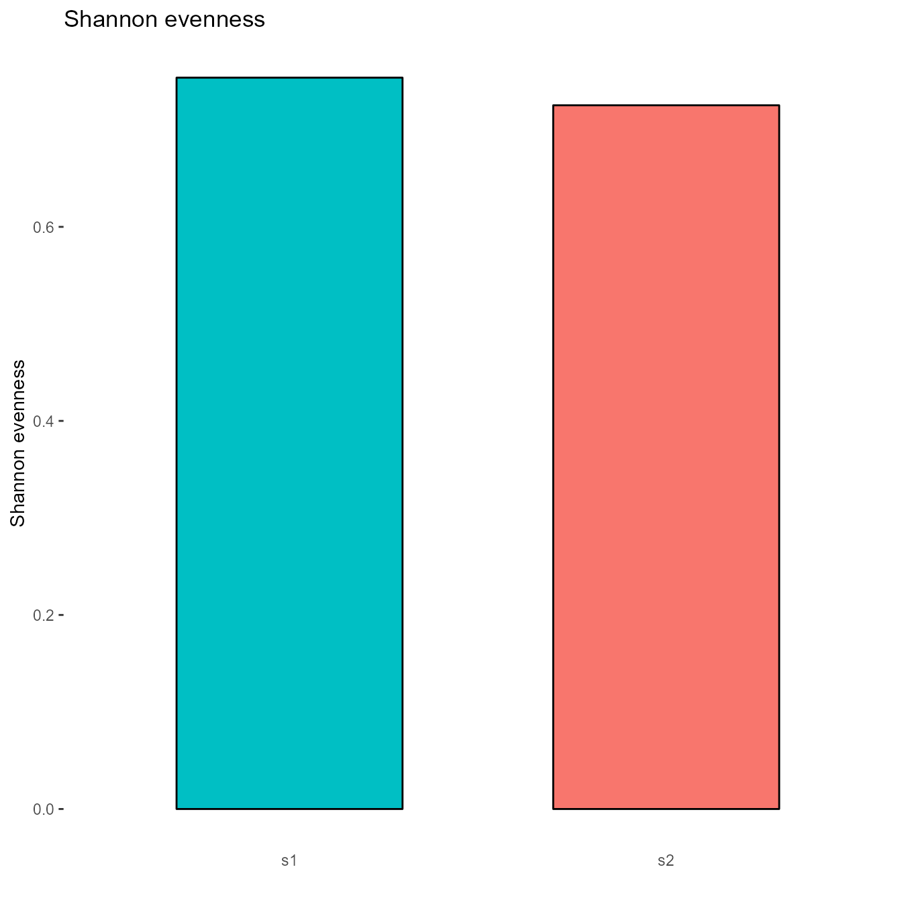
5.3. Visualizing Clonal Frequencies Using Donut Plots
To get a basic overview of clonal expansion, the VDJ_clonal_donut function can be used to generate donut plots for each sample, where the black section of the plot shows cells in unexpanded clones, while the remaining sections indicate the expanded clones by their frequency. vgm_bulk[[1]] should be used as input for the function.
donut_plts <- VDJ_clonal_donut(VDJ = vgm_bulk[[1]],
expanded.colors = c("grey50", "grey65", "grey80"),
non.expanded.color = "black", counts.to.use = "freq_column")## Using column clonotype_id for counting clones## Clones: Expanded: 0 / 0%; 1 cell 64475 / 100%; total: 64475## Cells: Expanded: 0 / 0%; 1 cell 64475 / 100%; Total: 64475## Clones: Expanded: 0 / 0%; 1 cell 32192 / 100%; total: 32192## Cells: Expanded: 0 / 0%; 1 cell 32192 / 100%; Total: 32192
donut_plts## [[1]]##
## [[2]]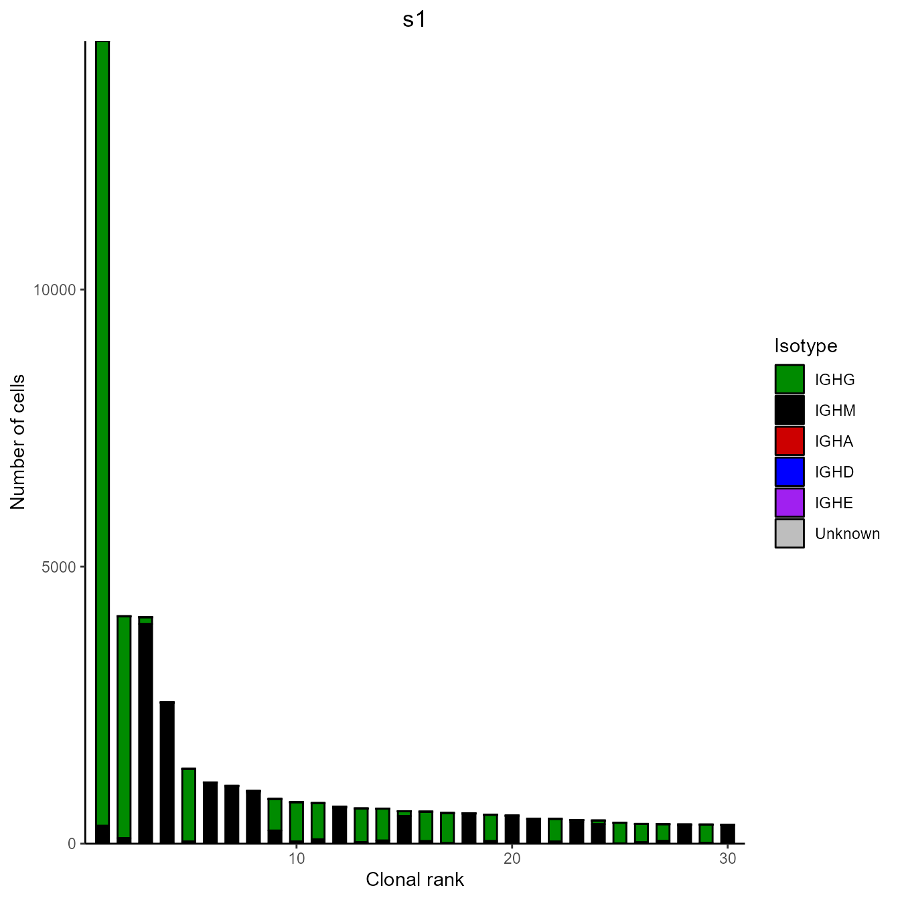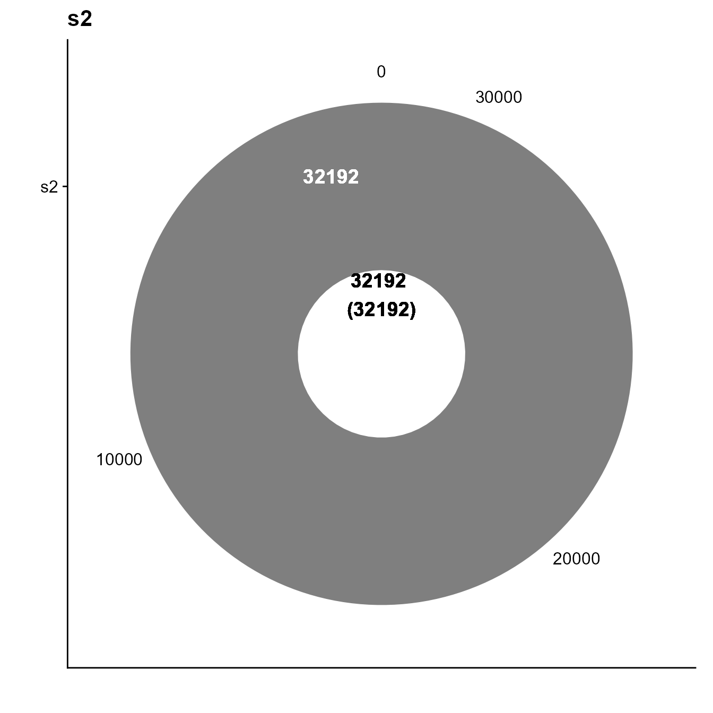
For large bulk data sets with many samples, generating all donut plots may take a while. Indexing can be used to generate only select plots for the chosen sample IDs (e.g., call donut_plts[1] to generate the plot for s1 only).
5.4. Calculating Common Repertoire Diversity Metrics
Diversity metrics, such as Shannon Evenness or the Jaccard index, can be calculated and displayed graphically for any column in the vgm_bulk[[1]] using the VDJ_diversity function:
# Calculate Shannon Evenness for the heavy chain CDR3:
diversity_plt_Shannon <- VDJ_diversity(VDJ = vgm_bulk[[1]],
feature.columns = c("VDJ_cdr3s_aa"),
grouping.column = "sample_id",
metric = c("shannonevenness"),
subsample.to.same.n = T)## Subsampled group s1 to 32192 entries## Used group s2 as a reference for subsampling with 32192 entries
diversity_plt_Shannon
# Calculate the Jaccard Index for the heavy chain CDR3:
diversity_plt_Jaccard <- VDJ_diversity(VDJ = vgm_bulk[[1]],
feature.columns = c("VDJ_cdr3s_aa"),
grouping.column = "sample_id",
metric = c("jaccard"),
platypus.version = "v3",
subsample.to.same.n = T)
diversity_plt_Jaccard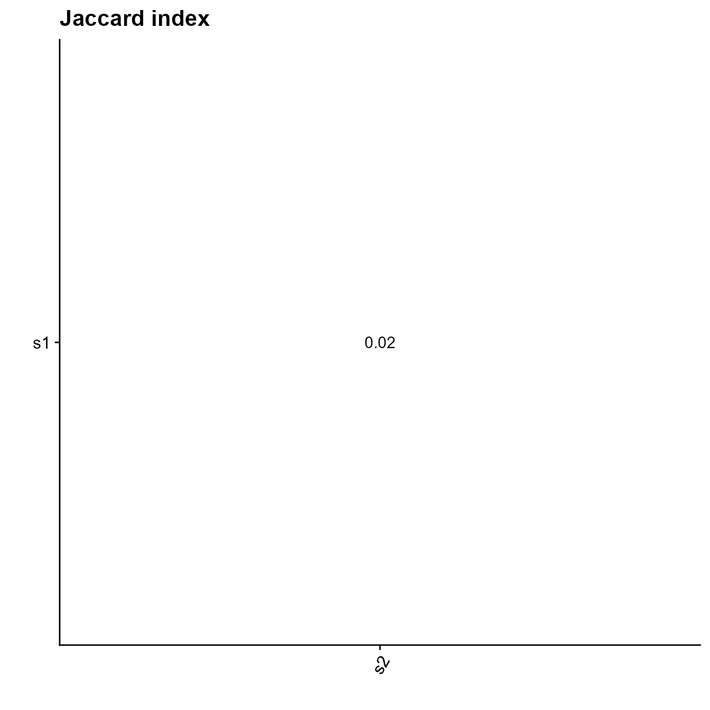
5.5. Examining Isotype Distribution
We can examine the clonal expansion for a defined number of clones by using the the VDJ_clonal_expansion function, where we set the number of clones to show, and can color the bar-plot by the desired column to examine the distribution of a selected parameter in the vgm (e.g., setting the color.by parameter to “isotype” will generate bars colored by the respective IgH chain; in principle, any other column from the vgm can be used).
Only vgm_bulk[[9]] should be used as the input to the the VDJ_clonal_expansion function.
# Plotting the isotype distribution of the top 30 clones:
clonal_out <- VDJ_clonal_expansion(VDJ = vgm_bulk[[9]], celltype = "Bcells",
clones = "30", group.by = "sample_id",
color.by = "isotype",
isotypes.to.plot = "all",
treat.incomplete.clones = "exclude",
treat.incomplete.cells = "proportional")
print(clonal_out[[1]])## [[1]]##
## [[2]]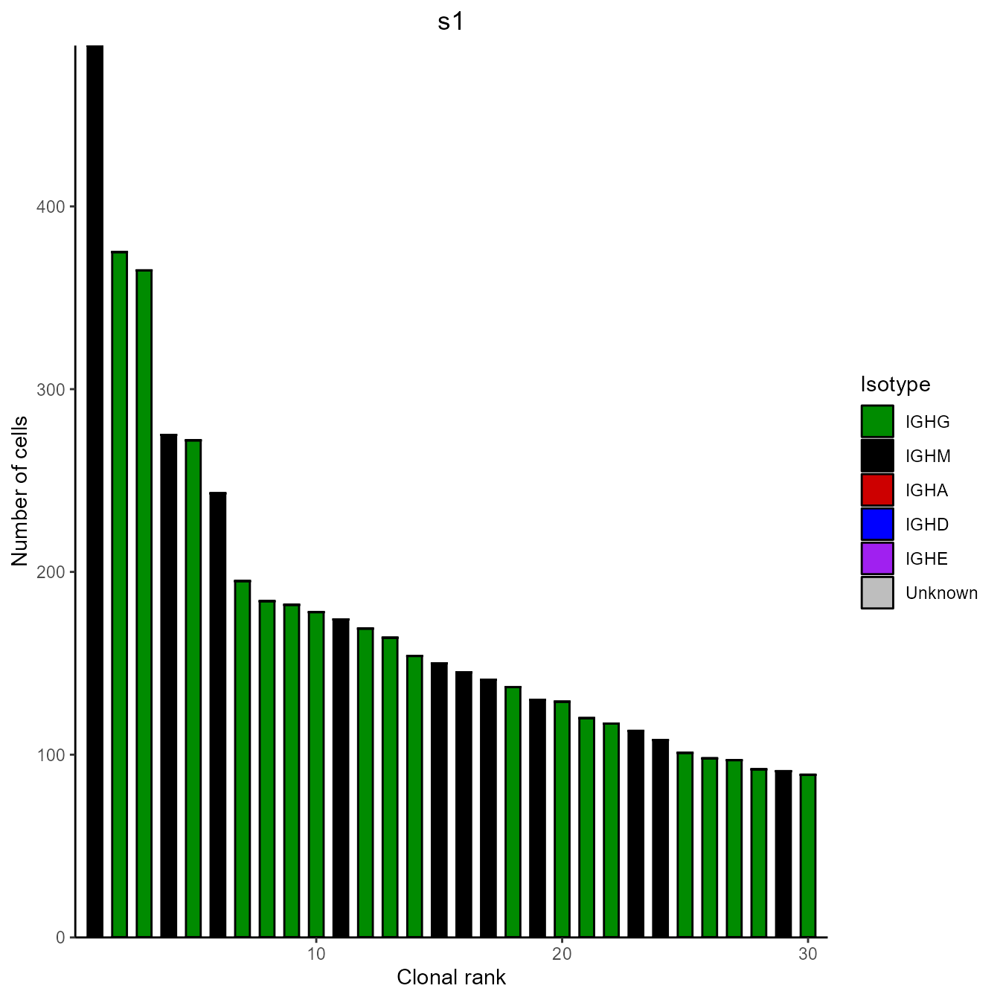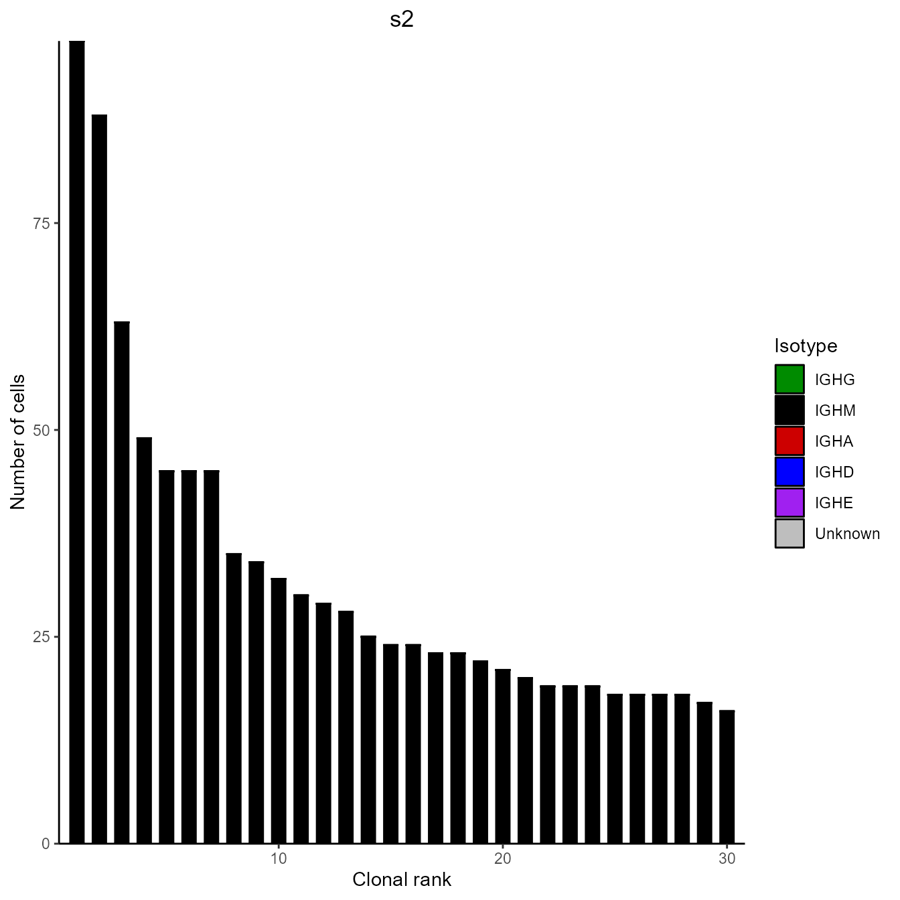
5.6. Sequence Similarity Networks
The VDJ_network function creates a sequence similarity network between repertoires or within a repertoire by connecting those clones with sequence similarity. Setting the per.sample argument to false indicates that one network for multiple repertoires should be produced.
Networks with a high number of sequences may take a very long time to be displayed. Alternatively, the user may subsample the dataset to reduce the runtime. In the example below, only the first 750 clones from Sample 1 are used to generate the sequence similarity network.
Note that the is.bulk argument must be set to True to run the VDJ_network function for bulk samples:
first_750_S1 <- vgm_bulk[[1]] %>% filter(sample_id == "s1") %>% .[1:750,]
network <- VDJ_network(VDJ = first_750_S1, per.sample = T,distance.cutoff = 8,
platypus.version = "v3", hcdr3.only = T, is.bulk = T)## Sample order: s1
igraph::plot.igraph(network[[1]][[1]],vertex.label=NA,vertex.size=7)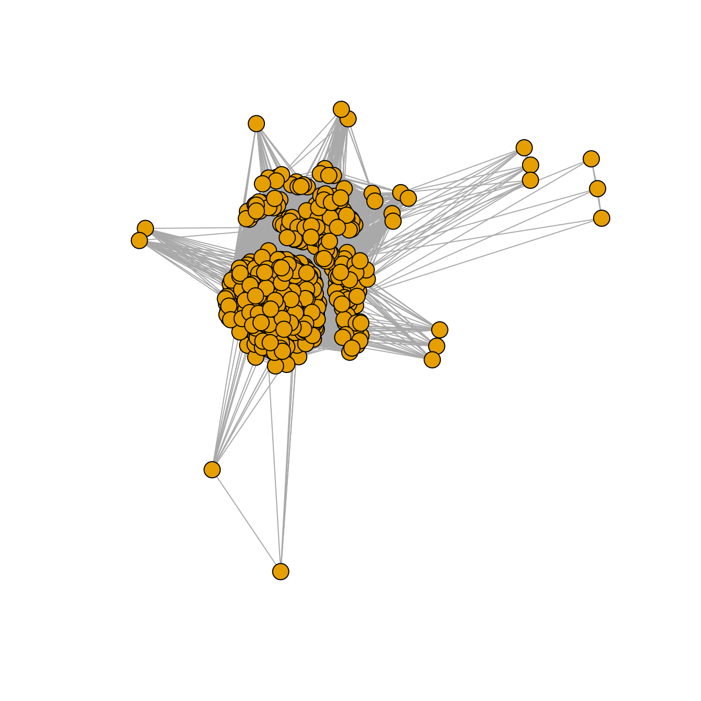
5.7. Germline Gene Usage
Platypus allows for a separate analysis of V gene usage for Heavy and Light Chains. With the VDJ_Vgene_usage_barplot function, the user may plot the most frequently used IgH or IgK/L V genes. By default, this function only provides visualizations for the HC V genes, but can also provide for the LC if the LC.Vgene argument is set to TRUE. The user can also select the number of most used genes to be depicted.
barplot <- VDJ_Vgene_usage_barplot(VDJ = vgm_bulk[[1]], HC.gene.number = 10,
LC.Vgene = F,
platypus.version = "v3",
is.bulk = T)## Sample order: s1 ; s2
barplot## [[1]]##
## [[2]]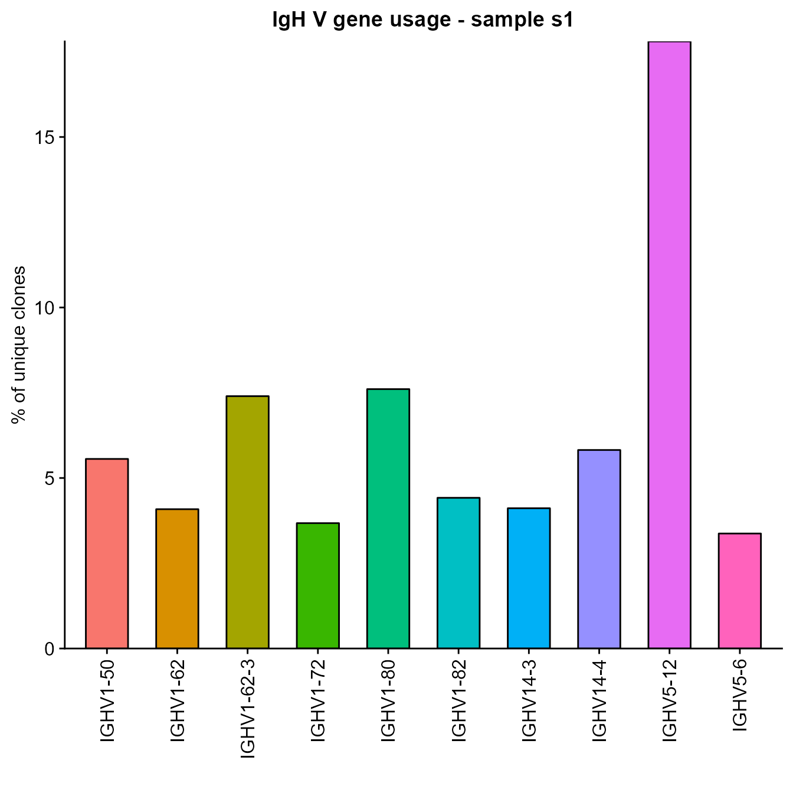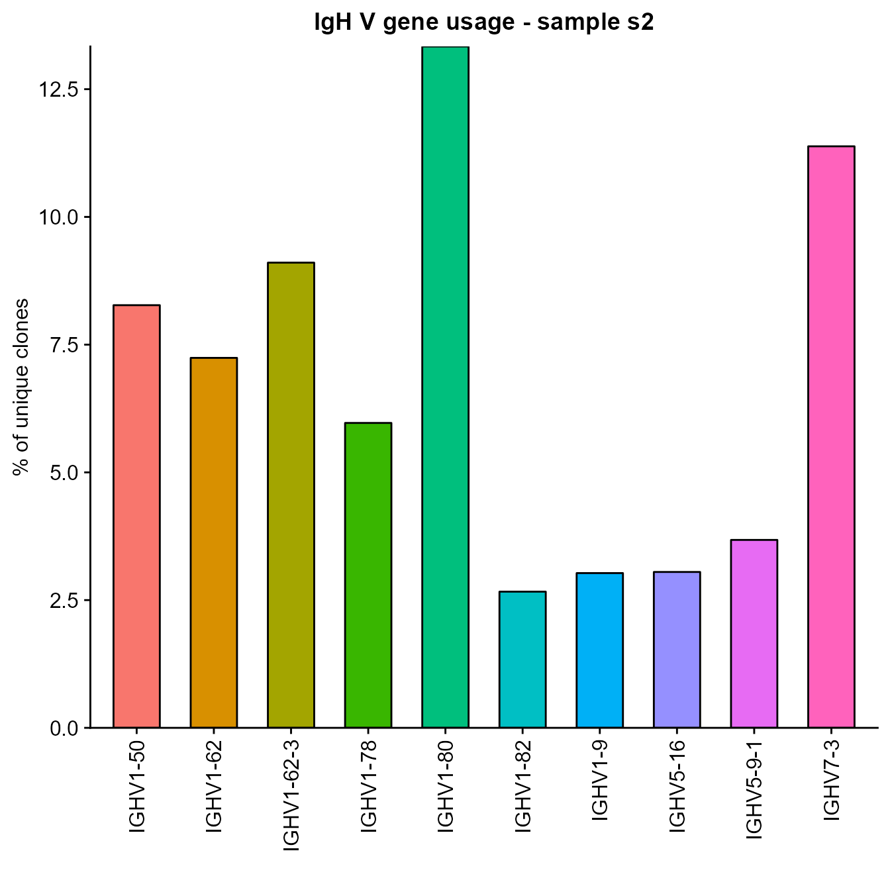 We can also generate stacked barplots showing the fraction of the most frequently used IgH and IgK/L Vgenes using the VDJ_Vgene_usage_stacked_barplot function:
stacked_barplot <- VDJ_Vgene_usage_stacked_barplot(vgm_bulk[[1]],
HC.gene.number = 4,
LC.Vgene = FALSE,
platypus.version = "v3",
is.bulk = T)## Sample order: s1 ; s2
stacked_barplot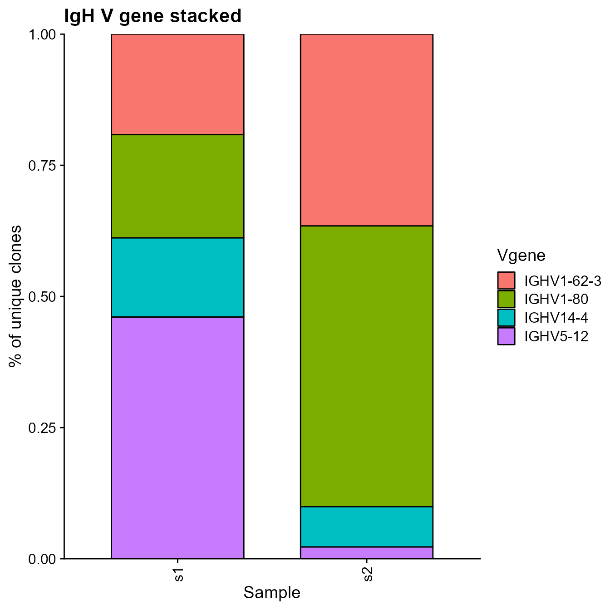 Additionally, a circular visualization of how V and J genes are combined throughout the repertoire can be generated using the VDJ_VJ_usage_circos function of Platypus.
To run VDJ_VJ_usage_circos, set A.or.B = “A” (if we’re working with heavy chains, and “B” if we’re working with light chains), and must set filter1H1L = “F” (as in all cases, we’ll only have either light or heavy information from bulk data). The c.threshold arguments is used to filter out clonotypes with lower than the user-selected frequency. This can be useful for bulk repertoire analysis, as the majority of clonotypes are often not highly-expanded.
circos_plt <- VDJ_VJ_usage_circos(VDJ = vgm_bulk[[1]], A.or.B = "A",
platypus.version = "v3", filter1H1L = "F",
c.threshold = 10) 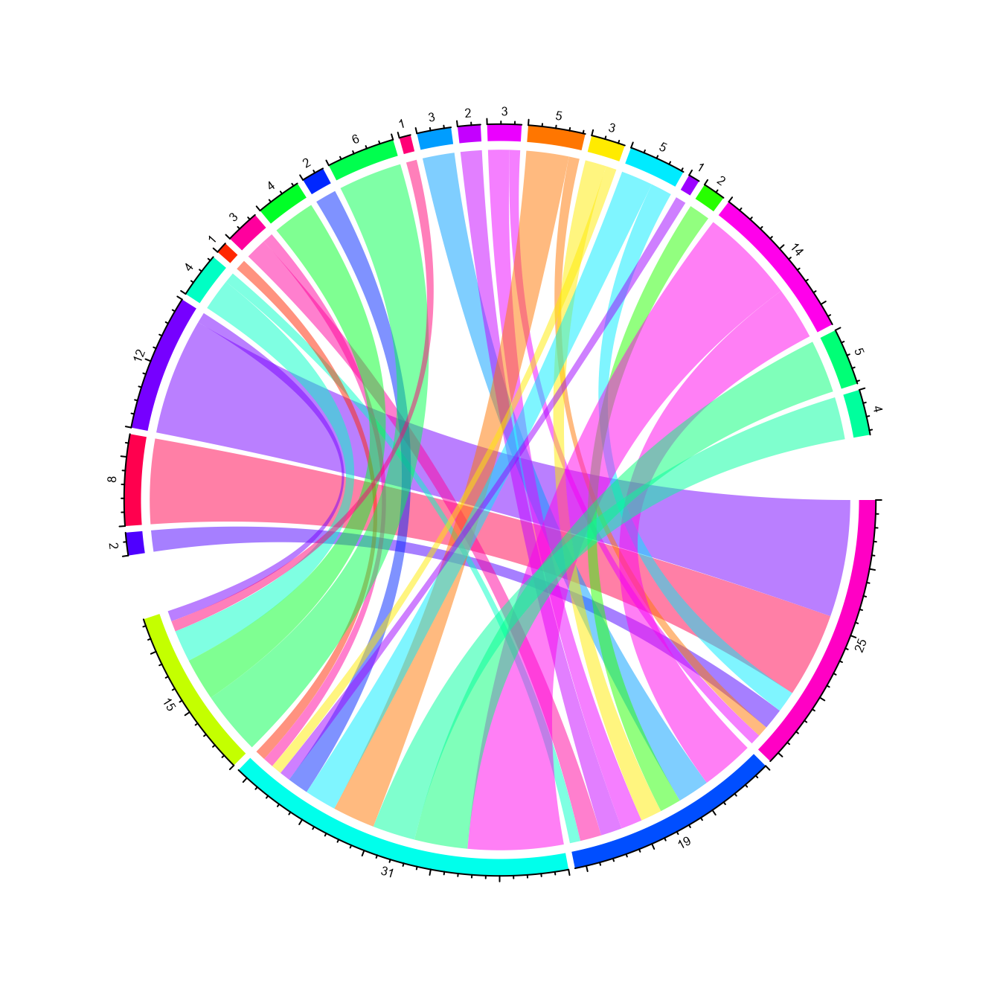
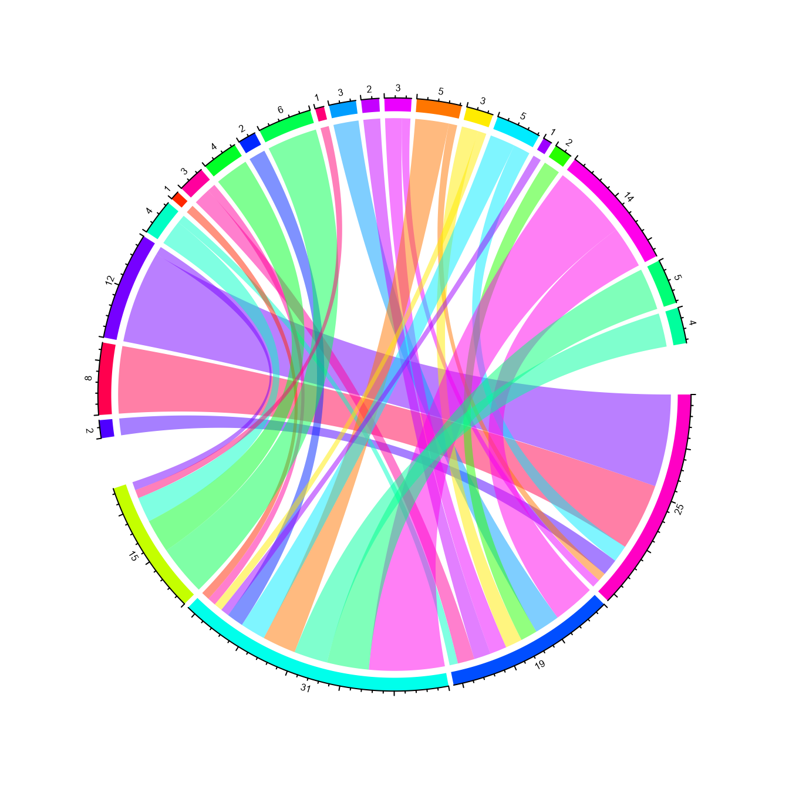
5.8. CDR3 Sequence Similarity
Using the VDJ_logoplot_vector function, we can also look for any specific heavy-chain (HC) and/or light-chain (LC) CDR3 amino acid patterns arising across the different clones. This function produces a logoplot of the CDR3 region, where the user can select the length of the CDR3 regionts to be plotted using the length_cdr3 argument (if length_cdr3 argument is set to auto, the most frequently appearing length in the vector will be used).
pasted_CDR3s <- paste0(vgm_bulk[[1]]$VDJ_cdr3s_aa, vgm_bulk[[1]]$VJ_cdr3s_aa)
CDR3_logoplot <- VDJ_logoplot_vector(cdr3.vector = pasted_CDR3s,
seq_type = "aa", length_cdr3 = "auto")## Returning logoplot based on 21595 sequences of a total 96667 input sequences
print(CDR3_logoplot)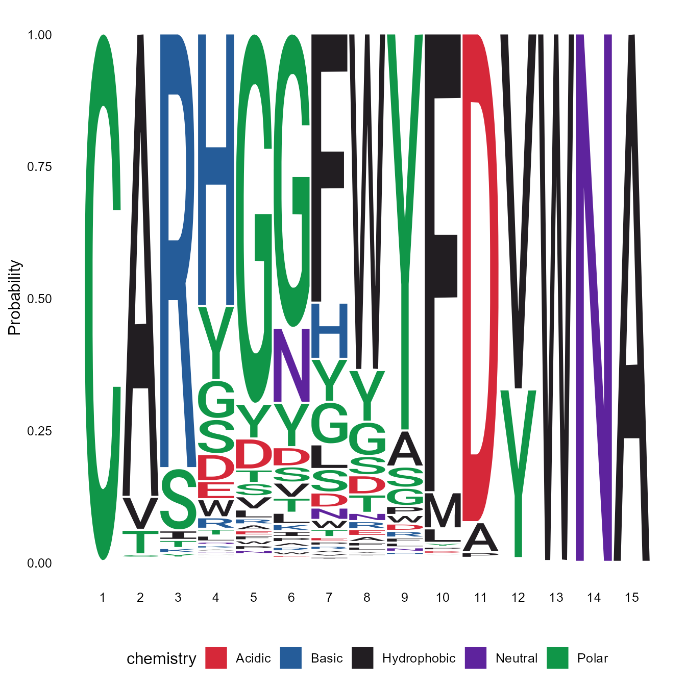
5.9. Repertoire Overlap
The VDJ_overlap_heatmap function can be used to test the overlap of selected features (e.g., CDR3s amino acid sequences, VDJ V genes) between different samples:
cdr3_overlap <- VDJ_overlap_heatmap(VDJ = vgm_bulk[[1]],
feature.columns = c("VDJ_cdr3s_aa"),
grouping.column = "sample_id",
axis.label.size = 20,
pvalues.label.size = 12,
add.barcode.table = T,
plot.type = "ggplot")
print(cdr3_overlap[[2]]) # Table of overlapping items## sample.names.1. sample.names.2. overlap
## 1 s1 s2 129
## items.overlapping
## 1 CTGYYYAMDYW;CARHGGFWYFDVW;CTGYYSNYYAMDYW;CARSLGDYW;CARSLVSFDYW;CARGGFAYW;CAGDSDGYWYFDVW;CARSYGSSYFDYW;CARGAYW;CARRPTVVAPYYAMDYW;CARDAWDWYFDVW;CATTVVATGDYW;CARGWYFDVW;CAGDSSGYWYFDVW;CARDNWDWYFDVW;CARQGFDYW;CARVYGPYYYAMDYW;CARRYYGSSYWYFDVW;CARRGGSSYWYFDVW;CAGDRSGYWYFDVW;CAREDYGYDFDYW;CARGPYW;CARHDLYYGSSYGWYFDVW;CARQDYGNERYAMDYW;CTRPGSSSYWYFDVW;CARDYYGSSWYFDVW;CARYYSNYFDYW;CARDGYDWYFDVW;CARHAGSAMDYW;CARHGDGYYPYW;CARDYAMDYW;CARGDWGDYW;CARKGFAYW;CAREDYW;CARYLLYYGNFDYYAMDYW;CARRPLYYGDFYAMDYW;CAREGITTVVADYGMDYW;CTRVSIYYGYDYYAMDYW;CARIYYYGRGYYAMDYW;CVRDGFYYGSSWYFDVW;CARPYYGNYVDYAMDYW;CARSYDGYYGWFAYW;CARIRSYEGVYAMDYW;CARSGYYGSSYYFDYW;CARWNYYDNSYPMDYW;CARLGTGTYAWFTYW;CARWNYYDNSYPMDFW;CARSAHYDYDWYFDVW;CARGGELRLGWYFDVW;CARPHFTTVDYAMDYW;CARGYYGSSSYYFDYW;CTRGGYDYERGAMDYW;CARPFTTVVDYAMDYW;CTRDTTVVAPYAMDYW;CAMAGYSNYVDFDVW;CARPYYSNYWYFDVW;CARDYYGSSWWFAYW;CTREGIYDYGWFAYW;CARCYYGSSHDYW;CARDDGYWYFDVW;CTRSGGNYDAMDYW;CTPNYYGTAWFAYW;CAGDSYGYWYFDVW;CAGDPDGYWYFDVW;CAGDRTGYWYFDVW;CTTHYYGSPWFAYW;CARPSTGGYYFDYW;CARDGYYVGAMDYW;CTREGSSYGYFDVW;CARYDYLHYAMDHW;CARYDYLYYAMDYW;CTRDGYYVGAMDYW;CARGTGTRAMDYW;CARDSNYWYFDVW;CATYSNYGYFDVW;CARGDGNWYFDVW;CARNYGSSYFDYW;CARKGWDGYFDVW;CAIYYVNYYFDYW;CMRYSNYWYFDVW;CARDYYGSSFDYW;CIGDYDRFAYW;CARYRTYFDYW;CARYGPYYFDYW;CARYDYGLFDYW;CARYDYGIFAYW;CARYDYGPFDYW;CARSGDWDGDYW;CARGGYDAMDYW;CARQGDGYYPYW;CARSYDGSFAYW;CTRDGNYAMDYW;CARGTGVFDYW;CARDSYYFDYW;CATGTSGFDYW;CSRGDWYFDVW;CSTGTGYFDFW;CARGGTRFAYW;CAREGNYDYEW;CARDQDYFDYW;CARDSDYFDYW;CARGGYFDVW;CARGYAMDYW;CARGVYFDYW;CARGYYLDYW;CTRGWYFDVW;CASGGPFAYW;CARSKGFDYW;CTRGYYFDYW;CAEGYAMDYW;CARGYFDVW;CARDGFAYW;CARSEFAYW;CARTPIDYW;CARQGFAYW;CARNFDVW;CARGMDYW;CTTTGDYW;CSRGAYW;CARGDYW;CARGGYW;CARGVYW;CARGSYW;CASFDYW;CARWDYW;CVRGAYW;CARGANW;CARWAYW;CARGAYR
## overlap_lab
## 1 129
cdr3_overlap[[1]]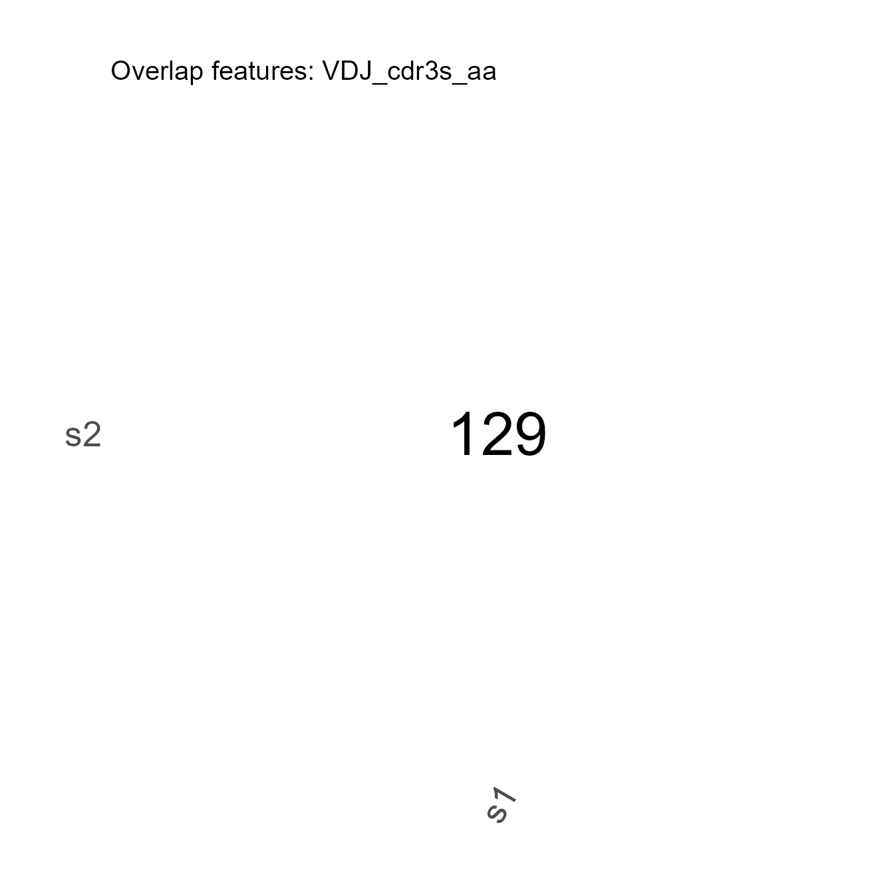